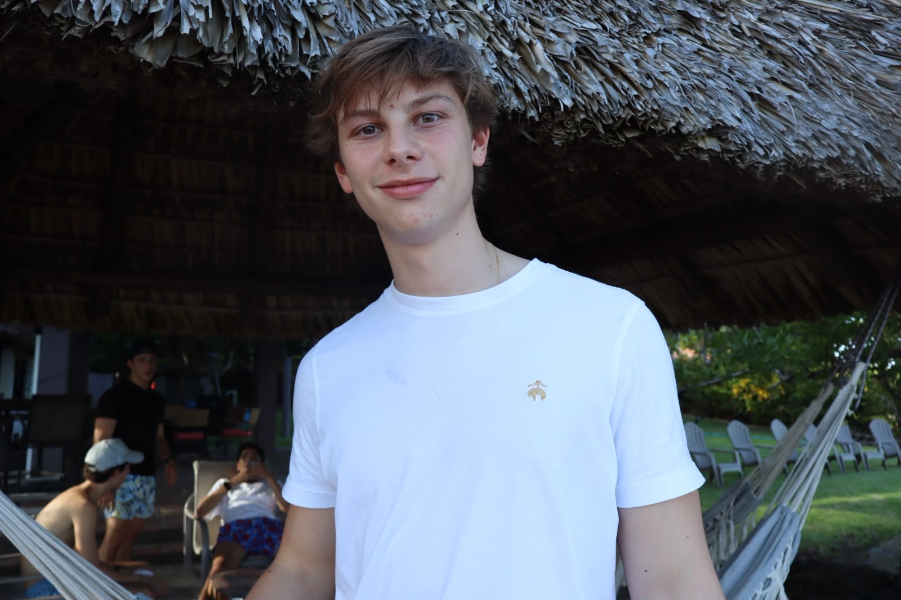

Federico Zúniga Guth

Software Technology Engineering Student
About Me
Hello! I am Federico, a Software Technology Engineering student at VIA University College in Horsens, Denmark. Originally from El Salvador, I was drawn to software engineering because I believe it is the foundation of the future. I have always been fascinated by how applications are built from the ground up and the immense potential that programming has to create impactful, successful solutions.
While my studies cover full-stack development, my true strength and passion lie in the logic behind the screen. I thrive on the structural side of programming, particularly working with Java. For me, the most rewarding part of coding is solving complex algorithmic puzzles, structuring clean logic, and experiencing the satisfaction of a flawless, error-free compilation. I am currently focusing on mastering backend concepts and software architecture before perfecting visual design.
Outside of the IDE, I value discipline and adaptability. Back in El Salvador, I stayed active through tennis and downhill biking, and since moving to Denmark, I maintain that focus by hitting the gym and running. I am currently looking for an internship opportunity at a large-scale company where I can apply my logical problem-solving skills, learn from experienced developers, and contribute to real-world software projects.